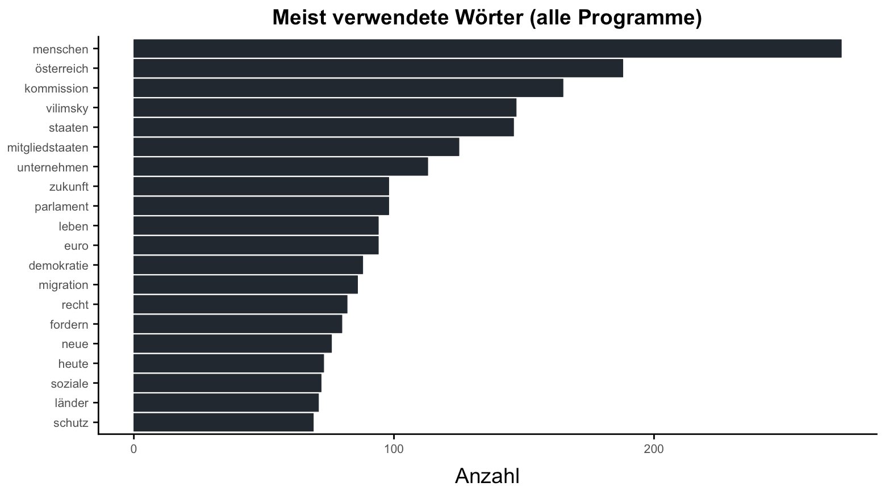
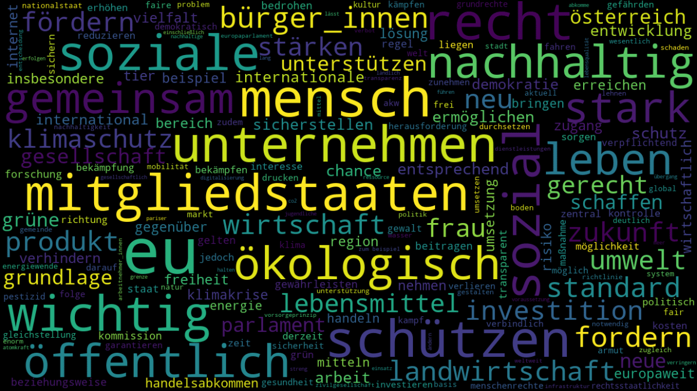
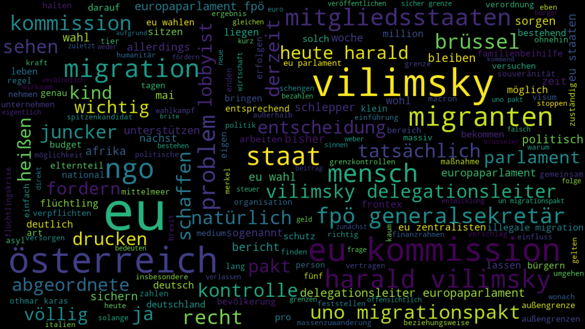
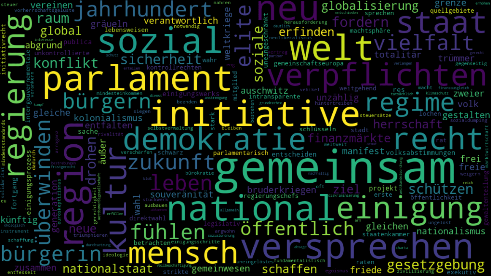
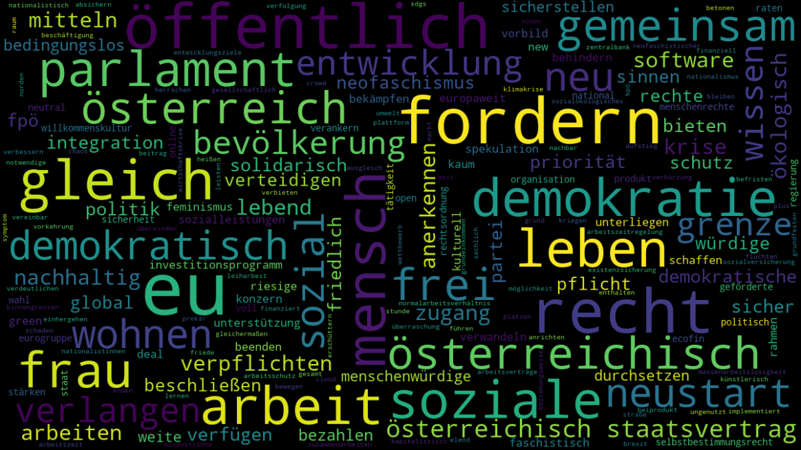
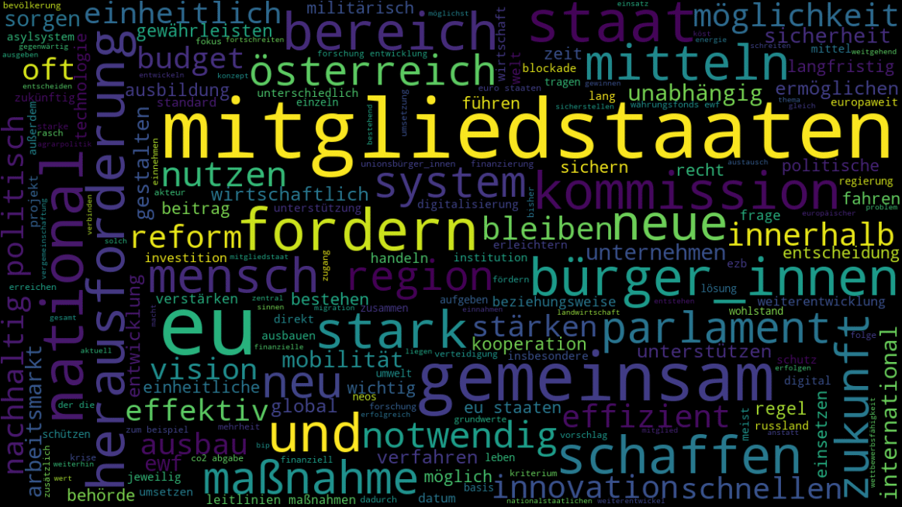
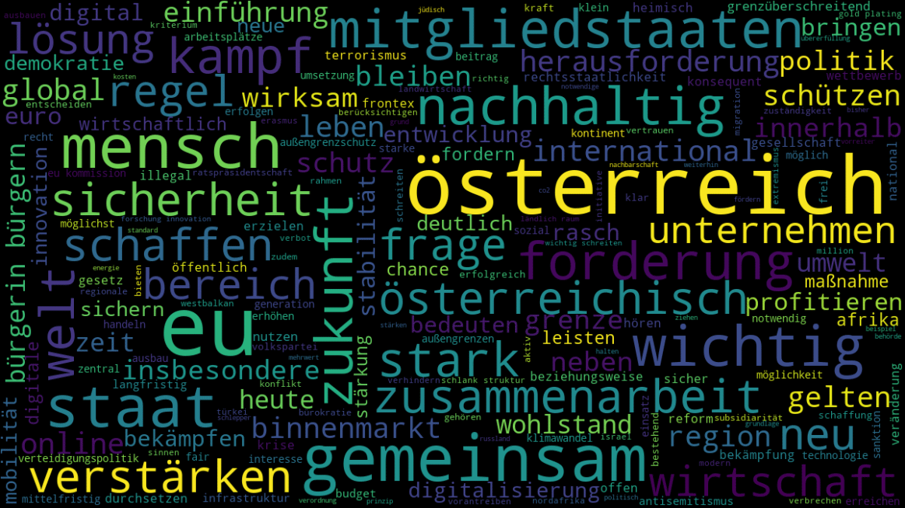
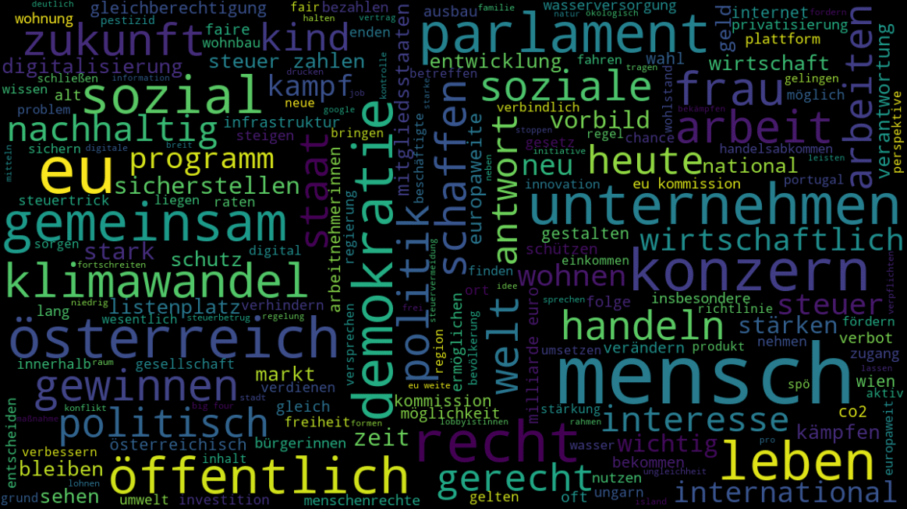

Die Kandidaten
| Die Grünen | Wahlprogramm (PDF) | Webseite |
| FPÖ | Wahlprogramm (Online) | Webseite |
| Initiative 1 Europa | Wahlprogramm (PDF) | Webseite |
| KPÖ plus | Wahlprogramm (PDF) | Webseite |
| NEOS | Wahlprogramm (PDF) | Webseite |
| ÖVP | Wahlprogramm (PDF) | Webseite |
| SPÖ | Wahlprogramm (PDF) | Webseite |
Als Grundlage für die folgende Analyse wurden die von den jeweiligen Parteien online zu Verfügung gestellten offiziellen Wahlprogramme (PDF-Dokumente) herangezogen. Da das Programm der FPÖ nicht zum Download bereit stand, wurden die relevanten Inhalte, von der Webseite www.fpoe.eu mittels Scraping bezogen.
Kommt es auf die Länge an?
Diese Frage muss sich auch jeder in Zusammenhang mit den Wahlprogrammen stellen, die dabei jedoch für jeden Geschmack etwas zu bieten haben. Demnach variiert auch die Lesedauer von nur ca. 5 Minuten für das Programm der Initiative 1 Europa bis knapp 2 Stunden für das der SPÖ, unter der Voraussetzung einer durchschnittlichen Lesegeschwindigkeit von 220 Wörtern pro Minute.
Sollen alle Programme gelesen werden sind ca. 7 Stunden einzuplanen, Pausen noch nicht eingerechnet.

Generell soll an dieser Stelle festgehalten werden, dass manche Parteien auch gekürzte Fassungen ihrer Programme anbieten, auf die jedoch im Rahmen dieser Analyse nicht weiter eingegangen worden ist.
Verständlichkeit der Inhalte
Dass die Verständlichkeit bei dieser Art von Inhalten besonders wichtig ist liegt auf der Hand und dennoch zeigen sich in diesem Punkt deutliche Unterschiede. So überrascht zum einen, dass sich der kürzeste Text, der Initiative 1 Europa, mit ca. 14,6 Bildungsjahren gleichzeitig auch als der anspruchsvollste herausstellt und sich das Programm der NEOS, mit 14,3 Bildungsjahren, nur knapp dahinter einreiht.
Am einfachsten verständlich und somit für den niedrigsten Bildungsstand am besten geeignet ist dagegen das Programm der FPÖ, für das in etwa 11,7 Bildungsjahren vonnöten sind und somit um 3 Jahre weniger die Schulbank gedrückt werden müssten, als für das Programm der Initiative 1 Europa.

Zur Berechnung dieser Lesbarkeitsindices wurde auf die Wiener Sachtextformel zurückgegriffen, die unter Berücksichtigung der durchschnittlichen Wort- bzw. Satzlängen einen Wert ermittelt, der darüber Aufschluss gibt, wie viele Bildungsjahre in etwa nötig sind, um den entsprechenden Text auch zu verstehen.
Worthäufigkeiten
Bevor der Fokus auf das Unterschiedliche der jeweiligen Programme gelegt wird, zeigt die folgende Grafik das Verbindende, anhand der am meisten verwendeten Wörter aller Parteiprogramme zusammengefasst. Obwohl sich daraus Konkretes nur schwer ableiten lässt, wird dennoch eine grobe Zuordnung, um wen es geht – die Menschen –, als auch in etwa worum – Österreich, (Mitglied)Staaten, Parlament, Euro, Demokratie –, möglich.
Bei der Auswertung der am meisten verwendeten Wörter pro Partei hingegen, lassen sich die Themen und Schwerpunkte gut erkennen, wie sich an den als WordCloud zusammengestellten Grafiken zeigt.
Die Grünen
FPÖ
Initiative 1 Europa
KPÖ plus
NEOS
ÖVP
SPÖ
Parteispezifische Worthäufigkeiten
Anhand dem sogenannte Tf-idf-Maß, kann die Häufigkeit von Wörtern in den einzelnen Programmen noch deutlicher herausgearbeitet werden. Dabei wird bei der Häufigkeit einzelner in Programmen vorkommender Wörter, zusätzlich noch berücksichtigt, wie oft diese in den Programmen der übrigen Parteien vorkommen und dem entsprechend gewichtet.

Neben manchen Wörtern, die vermutlich für nur wenig Überraschung sorgen, sticht die Tatsache, dass sich in der Liste der FPÖ mehrere Namen von Spitzenkandidaten oder Persönlichkeiten anderer Parteien bzw. Fraktionen – Karas, Weber, Juncker oder Macron – finden lassen doch heraus und stellt gleichzeitig die Frage in den Raum, warum eigentlich? Ob sich darin wohl eine Wahlstrategie zu erkennen gibt?